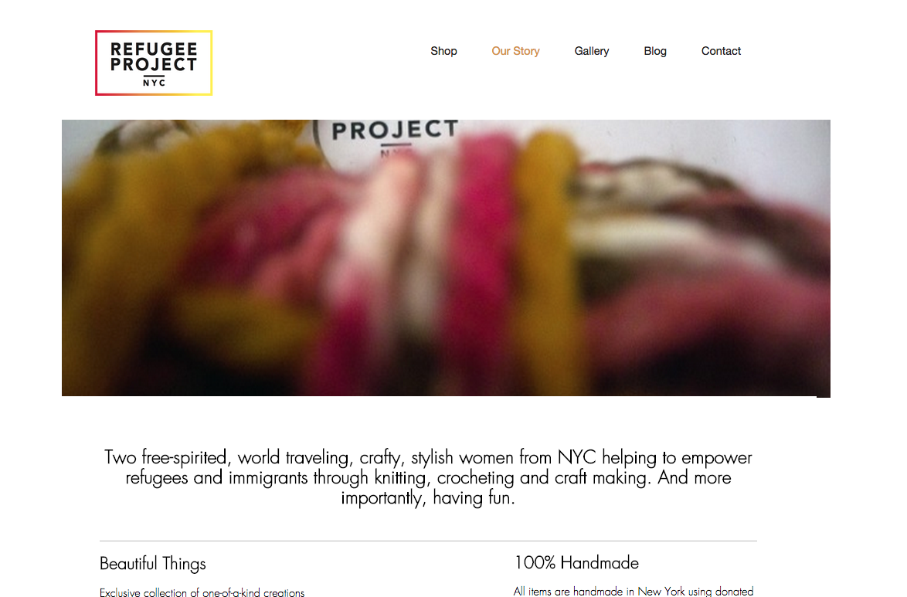
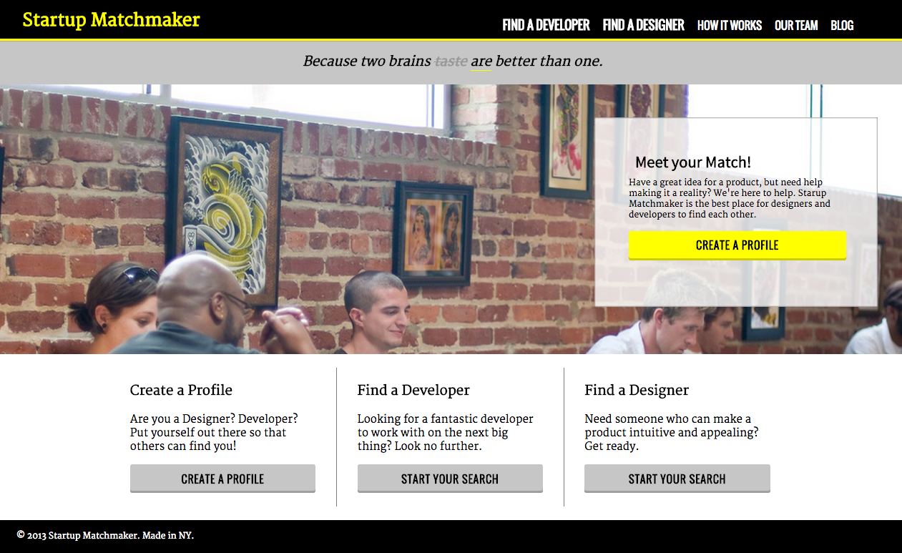

I have worked in television production for over ten years as a director, technical director, audio engineer, and camera technician.
An opportunity to direct for Verizon FiOS brought me to NYC. Here is a demo reel of some work I did with them:
In June, I completed a three-month web development course with General Assembly. This is my final project for that course. I utilized the Google maps API to create an interactive map of New York City.

Still a work in progress, I am building this site as a redesign for Refugee Project NYC. Most of the code for the layout is completed. The next, and possibly largest step is to build the online store.
I built this website for D's Eyez Productions, a NYC based video production company.

This was a website mock-up project for my General Assembly course.
